CS 180 · Project 4
Image Warping and Mosaicing
For this project, I built the main pieces of a panorama stitcher myself. I started with point correspondences, solved for projective homographies with least squares, and wrote inverse warping with both nearest-neighbor and bilinear interpolation. I then used the same code to rectify flat objects and blend three sets of photos into mosaics.
I think the most interesting part was seeing how one 3×3 matrix can either flatten a poster or line up two views of a whole scene.
In Part B, I removed the clicking step. My code now finds corners, describes them with small patches, matches them between images, and uses RANSAC to pick a homography that most matches agree on. I then compared the automatic mosaics with my manual ones from Part A.
Part A.1Shooting the pictures
I took each set from one spot and rotated the camera between shots, so the center of projection stayed as fixed as I could keep it. I tried to leave enough overlap to find reliable correspondences between neighboring views. The North set ended up with less overlap than the others, which is one reason its planar mosaic stretches so much near the sides. The first set looks north from Etcheverry Hall, the second follows a long hallway, and the third looks south from Etcheverry Hall.
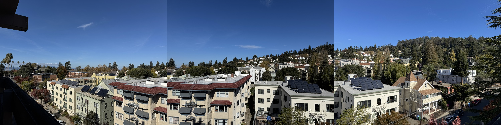
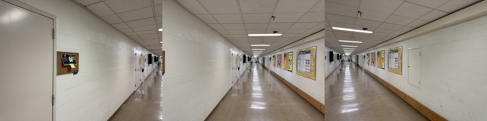
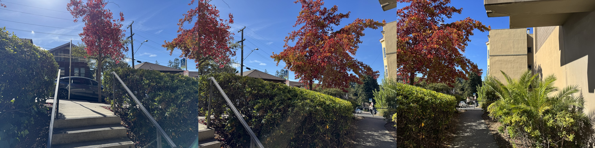
Part A.2Recovering homographies
I used matplotlib.ginput to click matching points in the two images in the
same order. Running python3 proj4.py select opens the picker and saves those
clicks, so I can reproduce the mosaics without putting coordinate lists in the source.
I used 11 or 12 correspondences for each pair instead of the minimum four because the
overdetermined system is less sensitive to a slightly imperfect click.
A homography maps a 2D point in one image to the matching point in another image. I write the points in homogeneous coordinates as
p = [x, y, 1]T, p' = [u, v, 1]T, p' ∼ Hp
The ∼ symbol means the two homogeneous vectors can differ by a nonzero scale. If I
expand the matrix multiplication, the unknown scale is the third coordinate of
Hp:
s[u, v, 1]T = [h11x + h12y + h13, h21x + h22y + h23, h31x + h32y + h33]T
u =
(h11x + h12y + h13)
/
(h31x + h32y + h33)
v =
(h21x + h22y + h23)
/
(h31x + h32y + h33)
A homography is unchanged if every entry is multiplied by the same scale, so it has
eight independent unknowns instead of nine. I fix the scale by setting
h33 = 1 and collect the other entries into
h = [h11, h12, h13, h21, h22, h23, h31, h32]T.
Multiplying through by each denominator turns the two rational equations into two
equations that are linear in h:
xh11 + yh12 + h13
- ux h31 - uy h32 = u
xh21 + yh22 + h23
- vx h31 - vy h32 = v
That gives the following two rows for one correspondence
(x, y) → (u, v):
[x y 1 0 0 0 -ux -uy]h = u
[0 0 0 x y 1 -vx -vy]h = v
With n correspondences, stacking these rows gives a
2n × 8 matrix A and a 2n-entry vector
b. Four point pairs give exactly eight equations, but any click error can
move the answer a lot. With more than four pairs, I solve the overdetermined system by
minimizing the total squared equation error:
h* = arg minh ||Ah - b||22 and therefore ATAh* = ATb
I use np.linalg.lstsq instead of explicitly computing the inverse of
ATA. After solving, I append h33 = 1 and reshape the
nine values into H. I also spread the clicked points around the overlap;
points that are all clustered together or nearly collinear make the system poorly
conditioned. I did not use cv2.findHomography or another homography helper.
def computeH(im1_pts, im2_pts):
a = []
b = []
for (x, y), (u, v) in zip(im1_pts, im2_pts):
a.append([x, y, 1, 0, 0, 0, -u * x, -u * y])
b.append(u)
a.append([0, 0, 0, x, y, 1, -v * x, -v * y])
b.append(v)
h = np.linalg.lstsq(np.array(a), np.array(b), rcond=None)[0]
return np.append(h, 1).reshape(3, 3)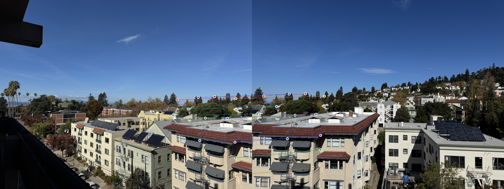
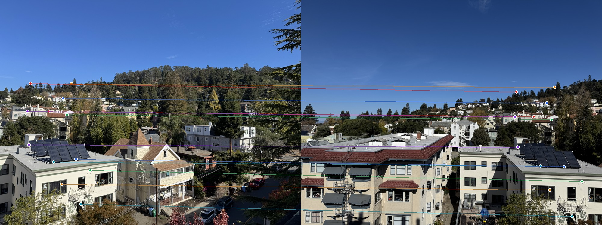
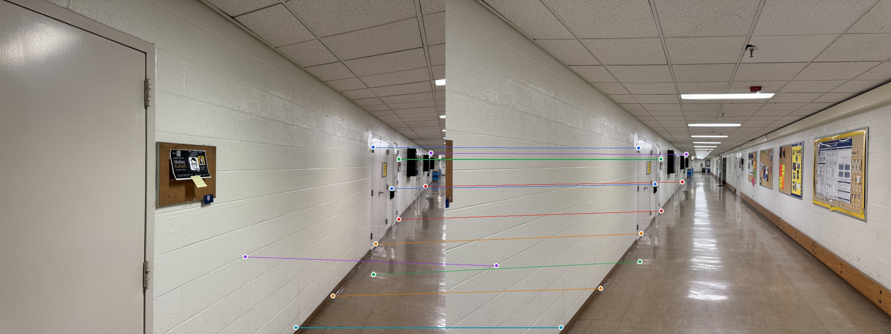
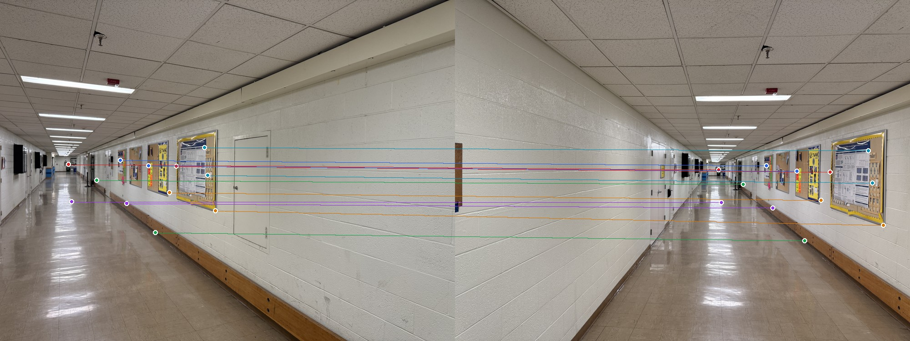
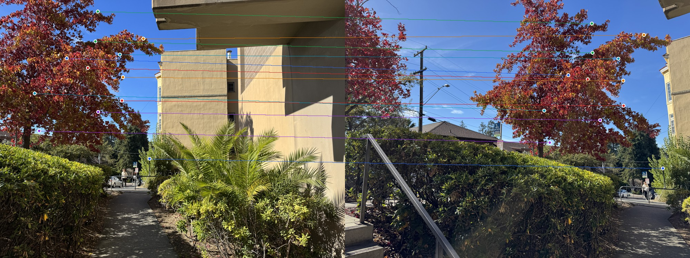
Recovered matrices
For each mosaic, I recovered one matrix from the left image to the middle and another from the right image to the middle:
Etcheverry Hall North · left → middle
[[ 5.074484 -0.296737 -3268.809037]
[ 1.614043 4.244451 -1355.234272]
[ 0.004050 -0.000076 1.000000]]
Etcheverry Hall North · right → middle
[[ 0.122095 0.022841 629.210606]
[ -0.358632 0.808271 89.104938]
[ -0.000864 -0.000024 1.000000]]
Hallway · left → middle
[[ 2.751649 0.008088 -1304.756127]
[ 0.578830 2.059868 -396.432351]
[ 0.001570 -0.000004 1.000000]]
Hallway · right → middle
[[ 0.354589 -0.001546 466.718280]
[ -0.253740 0.796993 84.006562]
[ -0.000692 0.000002 1.000000]]
Etcheverry Hall South · left → middle
[[ 3.299640 -0.144971 -1614.289351]
[ 1.111576 2.525038 -670.461626]
[ 0.002356 -0.000203 1.000000]]
Etcheverry Hall South · right → middle
[[ 0.277231 0.002410 499.301101]
[ -0.323828 0.753467 121.235199]
[ -0.000679 -0.000071 1.000000]]Part A.3Warping and rectification
I used inverse warping so every destination pixel gets a value. For each output point
p', I compute
p = H−1p', divide by the homogeneous
coordinate, and sample the source image at that location. My nearest-neighbor version
rounds to the closest pixel. My bilinear version takes the four surrounding pixels and
weights them by the horizontal and vertical distances. Both interpolators are written
directly with NumPy; I did not use cv2.warpPerspective,
skimage.transform.warp, or an interpolation helper.
The two required entry points are warpImageNearestNeighbor(im, H) and
warpImageBilinear(im, H). They share the same inverse-warping routine and
select which interpolation rule it uses.
def warpImageNearestNeighbor(im, H):
return warp_bounds(im, H, "nearest")[0]
def warpImageBilinear(im, H):
return warp_bounds(im, H, "bilinear")[0]Before making mosaics, I tested the warp by clicking four corners of two known rectangles and mapping them to upright rectangles. This made mistakes in point order or homography direction very obvious.
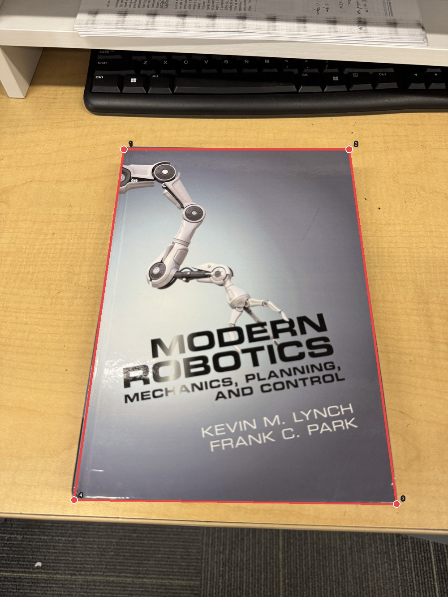
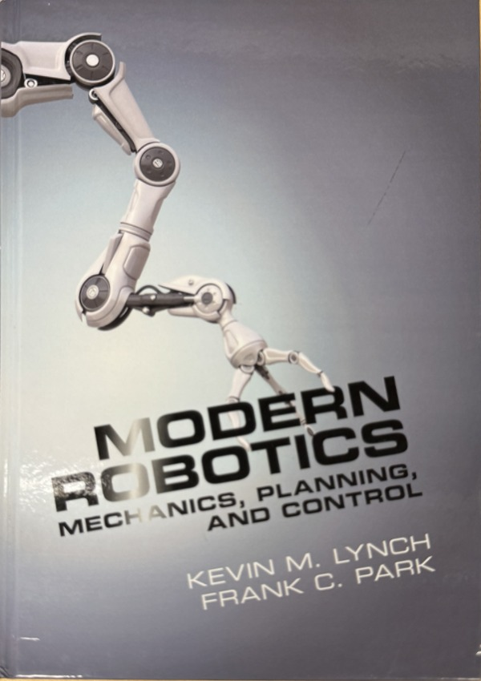
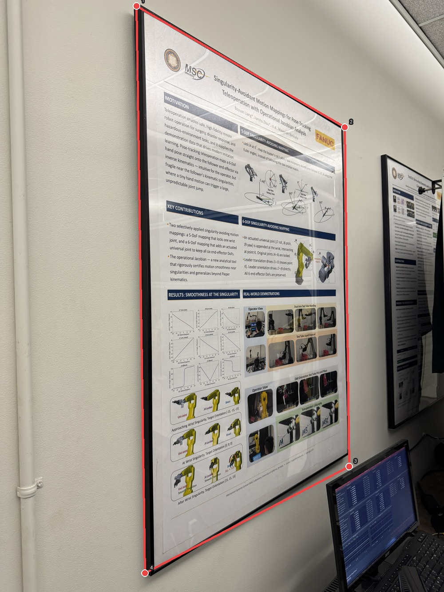
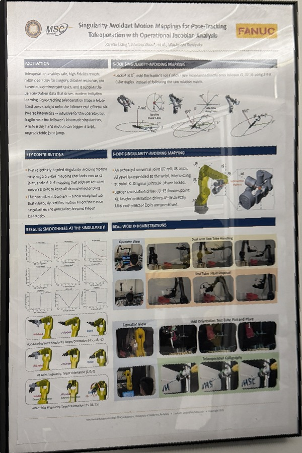
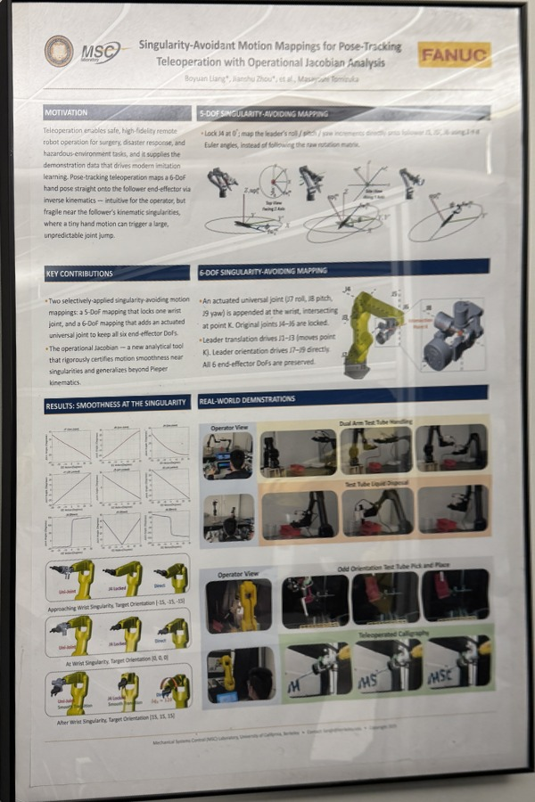
Nearest neighbor vs. bilinear
Nearest neighbor is simpler and about four times faster in my test, but diagonal lines and small letters look blockier. Bilinear interpolation takes four samples and does more arithmetic, so it is slower, but I think the smoother text and edges are worth it for the final mosaics. The close-ups below use the same poster region and output scale.
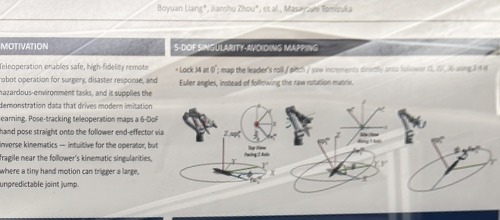
| Method | Time | Samples per output pixel |
|---|---|---|
| Nearest neighbor | 0.047 s | 1 |
| Bilinear | 0.201 s | 4 |
Part A.4Blending mosaics
For each set, I kept the middle photo fixed and warped the left and right photos into its coordinate system with bilinear interpolation. I transformed every image corner first to find one canvas large enough for the full result. A valid-pixel mask travels with each warp.
I did not let one image simply overwrite another. I ran a distance transform on each mask, so a pixel gets a larger weight near the middle of its image and a smaller weight near an edge. In overlapping regions I divide the weighted RGB sum by the total weight. This feathering softens the seams even when exposure changes slightly between shots. The remaining stretching near the outer edges comes from using one planar projection over a wide field of view.
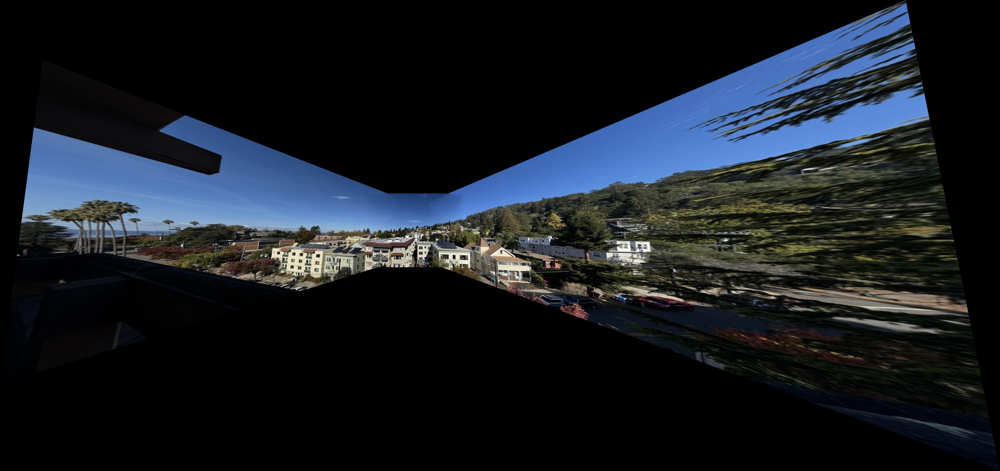
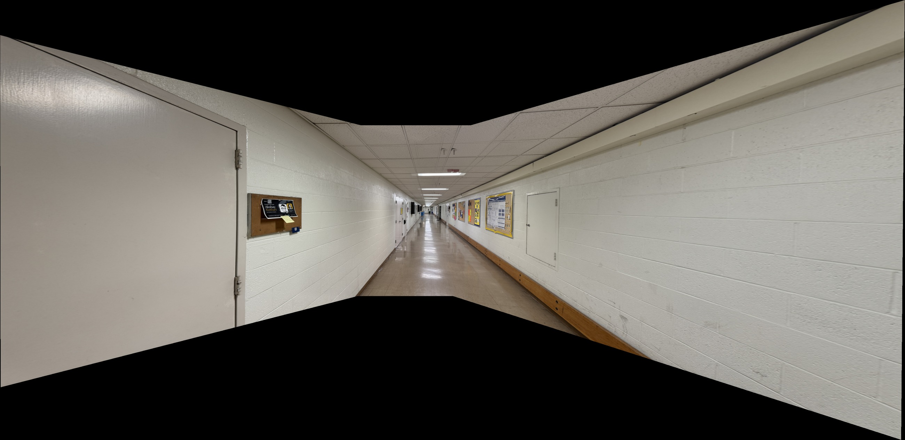
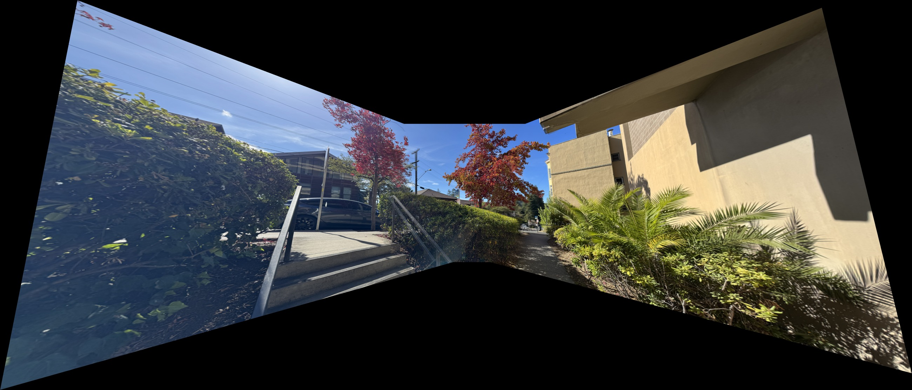
Part A.5 · OptionalBells & Whistles: Cylindrical projection
This part is optional for CS 180. The planar Etcheverry Hall North mosaic stretches the two side images because one flat projection has to represent a very wide field of view. For this bells-and-whistles extension, I projected each photograph onto a cylinder before aligning it. A cylinder lets horizontal camera rotation behave approximately like a translation, so the buildings and trees keep much more natural proportions.
For a source point (x, y), image center (cx, cy),
and focal length f, my forward cylindrical coordinates are
θ = atan((x − cx) / f)
xc = fθ + cx
yc = (y − cy) cos(θ) + cy
I used f = 700 pixels. To avoid holes and unnecessary resampling, I used the
inverse equations for every pixel in the final panorama and sampled directly from the
original photographs with my bilinear interpolator:
θ = (xc − cx) / f
x = f tan(θ) + cx
y = (yc − cy) / cos(θ) + cy
I also mapped the saved correspondences into cylindrical coordinates. Neighboring cylindrical images should differ mostly by translation, so I used the median horizontal and vertical displacement between their matching points. Finally, I applied the same distance-based feathering as Part A.4 and cropped to the largest fully covered rectangle.
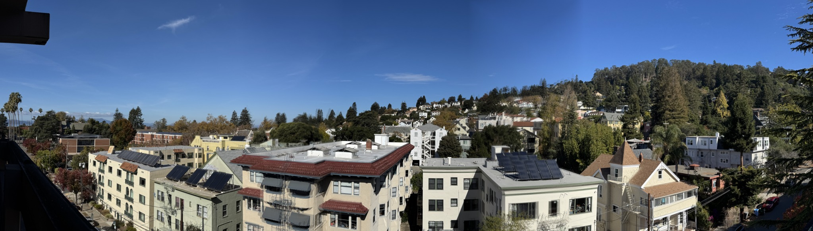
Part B.1Harris corners and ANMS
For Part B, I followed a simplified version of Brown et al., “Multi-Image Matching
using Multi-Scale Oriented Patches.” The first step is to find points that are easy
to locate again in another photo. I converted each image to grayscale and used the
provided get_harris_corners function at a single scale. It returns every
local maximum of the Harris response, so I got about 19,000 points on a
1000×750 photo. Many of them were tiny noise peaks in the flat blue sky. I kept only
corners with a response above 0.001 of the strongest one, which removed almost all of
the sky points and left about 7,600 corners.
That is still far too many, and the strongest corners bunch up in busy areas like the trees and the solar panels. If I only took the strongest ones, most of my matches would come from one small part of the image. Adaptive non-maximal suppression (ANMS) fixes this. For each corner xi, I find the radius to the nearest corner that is clearly stronger:
ri = minj ||xi − xj||, s.t. f(xi) < c · f(xj), c = 0.9
A corner gets a large radius only if it is the strongest point in a big neighborhood. I
then keep the 1000 corners with the largest radii. The paper uses 500, but I got about
twice as many correct matches with 1000. To keep the memory reasonable, I compute the
pairwise distances in chunks of 1000 rows using dist2.
def anms(pts, r, n=1000, c=0.9):
d = np.full(len(pts), np.inf)
for i in range(0, len(pts), 1000):
dd = dist2(pts[i:i + 1000].astype(float), pts.astype(float))
dd[r[i:i + 1000, None] >= c * r[None, :]] = np.inf
d[i:i + 1000] = dd.min(axis=1)
keep = np.argsort(-d)[:n]
return pts[keep]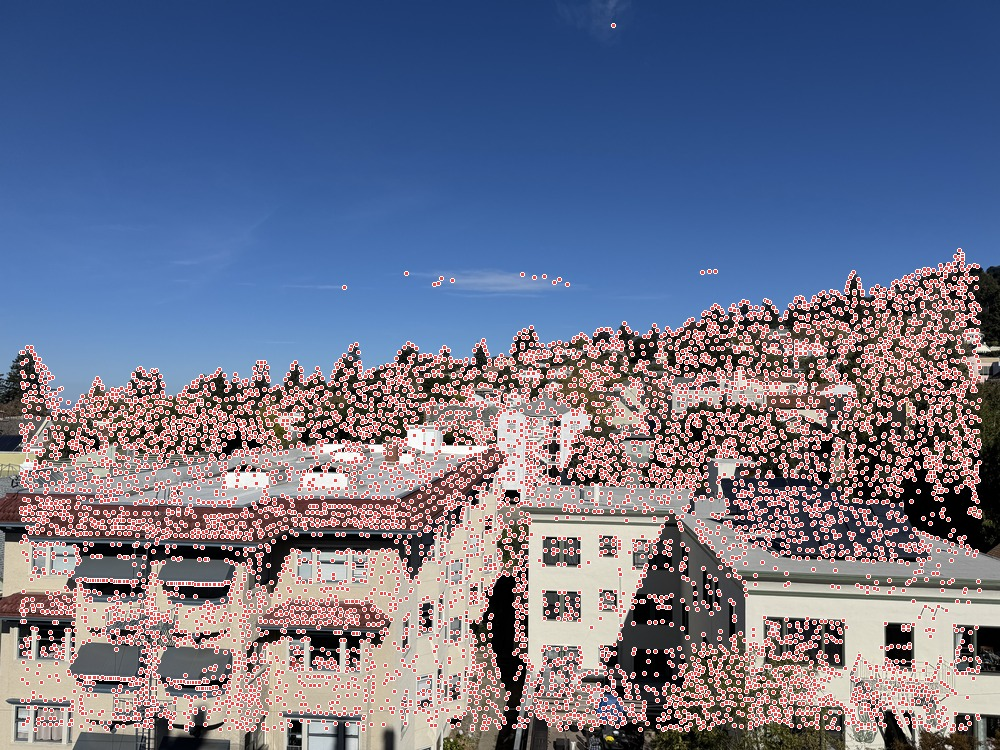
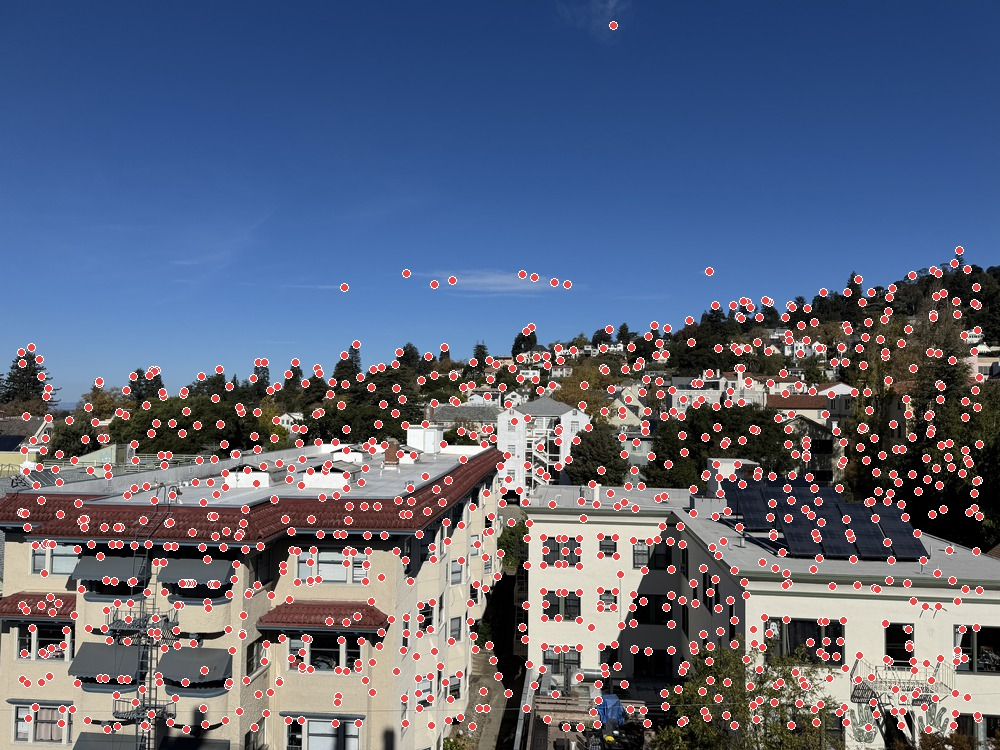
Part B.2Feature descriptors
Next, I describe the area around each corner so I can compare corners between images. I blur the grayscale image with a Gaussian (σ = 2), then sample an 8×8 grid with a spacing of 5 pixels inside a 40×40 window around the corner. Sampling the larger window from a blurred image keeps the descriptor from changing much when the corner location is off by a pixel or two. I use axis-aligned patches because I rotated the camera only horizontally, so the patches do not need to be rotation invariant.
Finally, I apply bias/gain normalization: I subtract the patch mean and divide by its standard deviation. This means a patch that is brighter or has more contrast in one photo can still match the same patch in another photo. Each descriptor is a 64-entry vector.
def desc(im, pts):
g = gaussian_filter(gray(im), 2)
d = []
for x, y in pts:
p = g[y - 18:y + 20:5, x - 18:x + 20:5]
d.append(((p - p.mean()) / (p.std() + 1e-8)).ravel())
return np.array(d)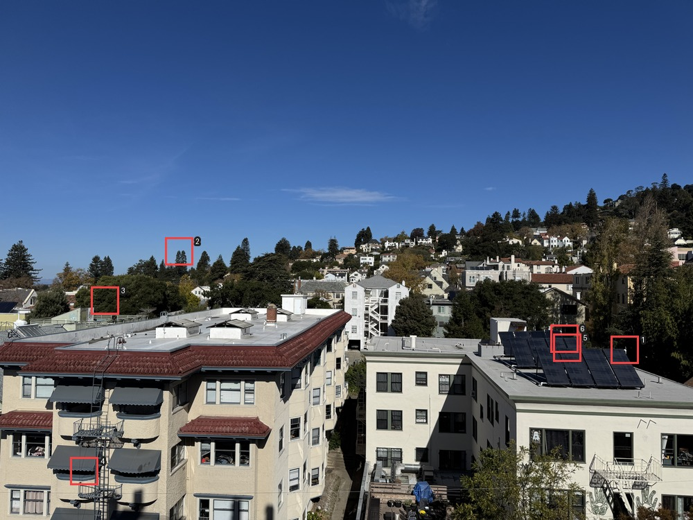
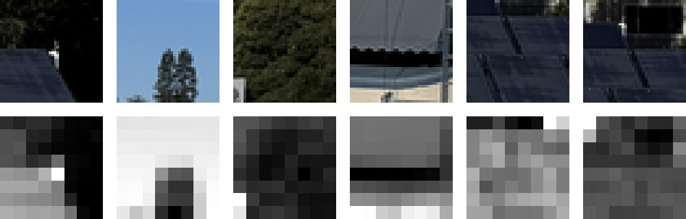
Part B.3Feature matching
To match features, I compute the distance from every descriptor in one image to every descriptor in the other. A small nearest-neighbor distance alone is not enough, because repeated textures like windows and roof tiles can have several close matches. Instead, I used Lowe's ratio test: I keep a match only if the nearest neighbor is much closer than the second-nearest neighbor.
e1-NN / e2-NN < 0.6
I picked 0.6 from Figure 6b of the paper, where correct and incorrect matches start to separate well. I also tried 0.7. It gave more matches, but a larger share of them were wrong, so I kept 0.6. A few bad matches still get through, like the palm tree in the Etcheverry Hall North set below. RANSAC handles those in the next step.
def match(d1, d2, t=0.6):
d = np.sqrt(np.maximum(dist2(d1, d2), 0))
j = np.argsort(d, axis=1)[:, :2]
i = np.arange(len(d1))
ok = d[i, j[:, 0]] / d[i, j[:, 1]] < t
return np.c_[i[ok], j[ok, 0]]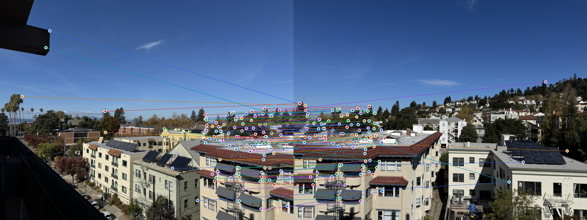
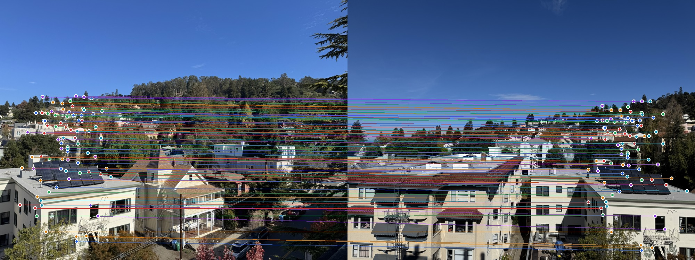
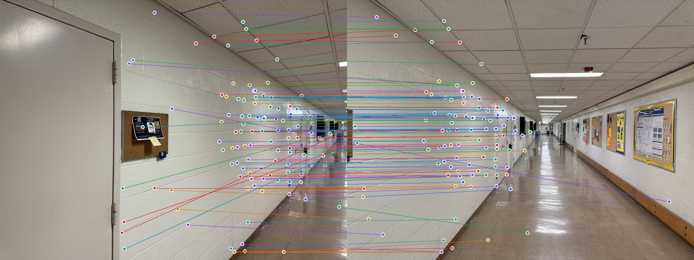
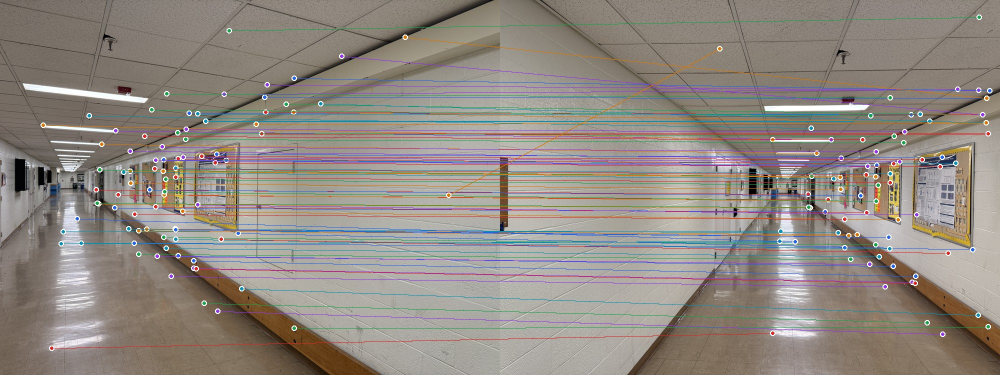
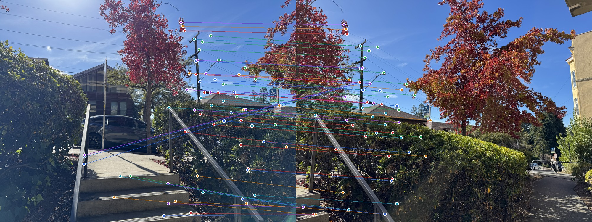
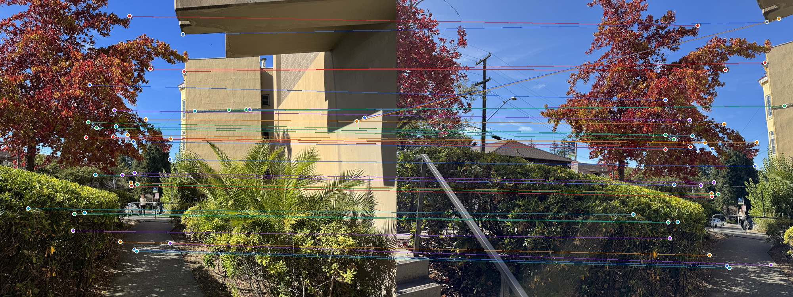
Part B.4RANSAC and automatic mosaics
Least squares is very sensitive to outliers, so even one bad match can pull the
homography far off. I used 4-point RANSAC to find the set of matches that agree with
each other. In each of 2000 rounds, I pick four random matches, fit an exact homography
with my computeH from Part A, and project every point from the first image.
A match counts as an inlier if its projected point lands within 2 pixels of its partner.
After all the rounds, I take the largest inlier set and refit H on all of
those points with least squares.
def ransac(p1, p2, n=2000, eps=2):
rng = np.random.default_rng(0)
best = np.zeros(len(p1), dtype=bool)
for _ in range(n):
k = rng.choice(len(p1), 4, replace=False)
h = computeH(p1[k], p2[k])
with np.errstate(all="ignore"):
e = np.linalg.norm(project(p1, h) - p2, axis=1)
ok = e < eps
if ok.sum() > best.sum():
best = ok
return computeH(p1[best], p2[best]), bestWith the left → middle and right → middle homographies, I reused the same canvas and distance-transform feathering from Part A.4. The only difference from Part A is where the correspondences come from.
| Set | Pair | Matches | Inliers |
|---|---|---|---|
| Etcheverry Hall North | left → middle | 76 | 69 |
| Etcheverry Hall North | right → middle | 81 | 78 |
| Hallway | left → middle | 76 | 62 |
| Hallway | right → middle | 85 | 42 |
| Etcheverry Hall South | left → middle | 31 | 12 |
| Etcheverry Hall South | right → middle | 36 | 15 |
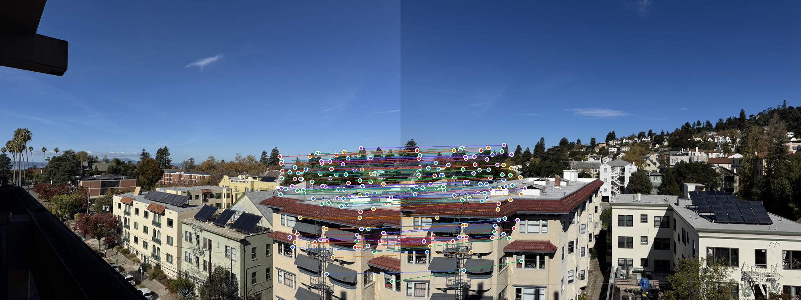
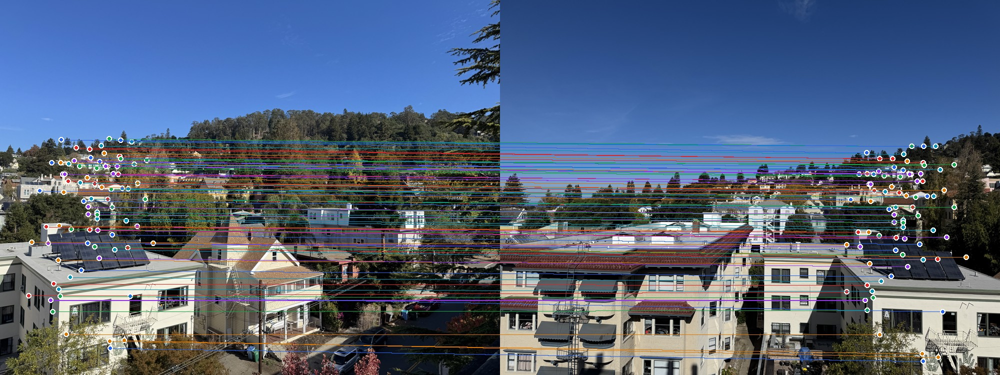
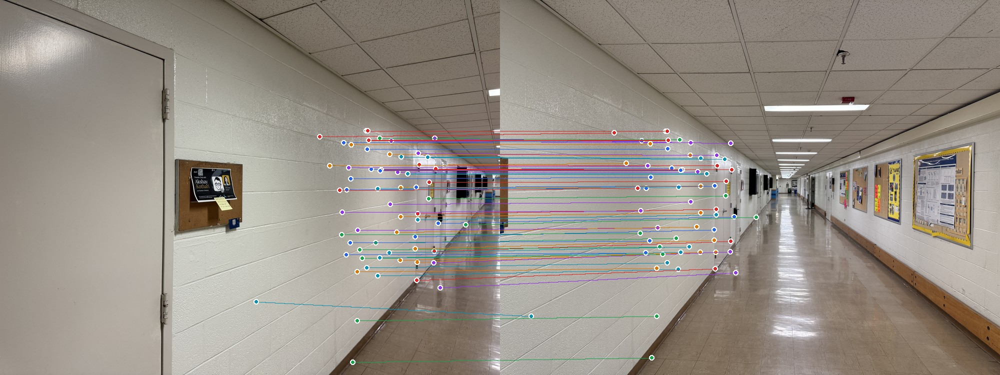
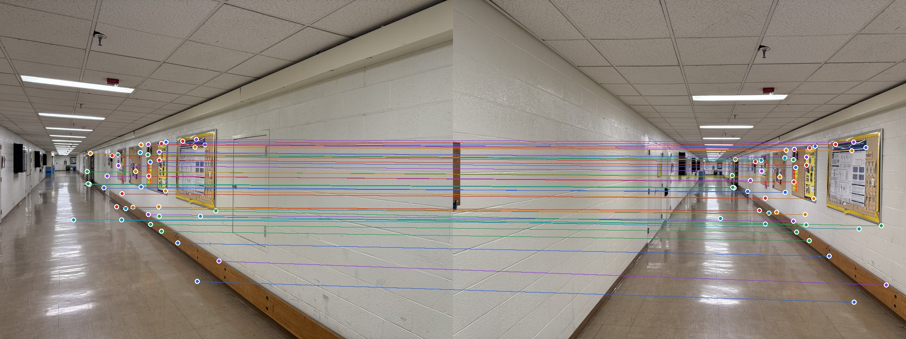
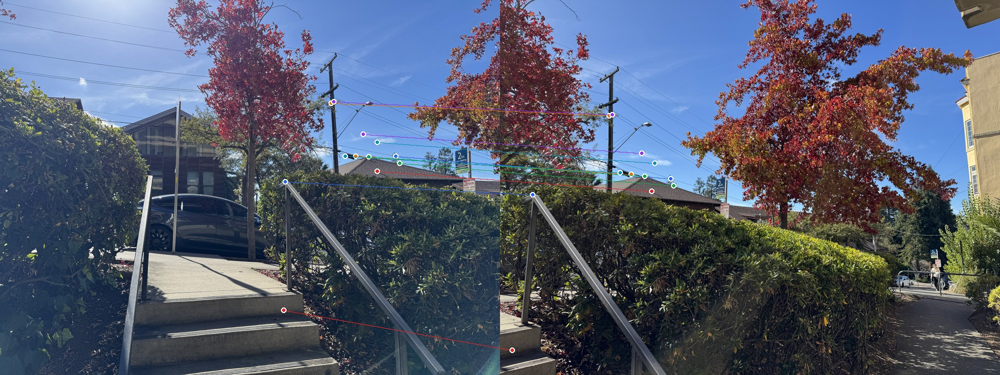
Manual vs. automatic
The left column uses my clicked points from Part A, and the right column uses the automatic pipeline. For the Etcheverry Hall North and Hallway sets, the two results look almost the same, and the recovered matrices are close to my manual ones. The automatic version even finds more correspondences than I clicked. Etcheverry Hall South was the hardest set: the bushes and leaves look alike everywhere, so only 12 and 15 matches survived RANSAC, and most of them sit on the roof and power lines. The overlap still lines up well, but the far-left image is stretched more than in my manual mosaic, because my clicked points covered more of the overlap.
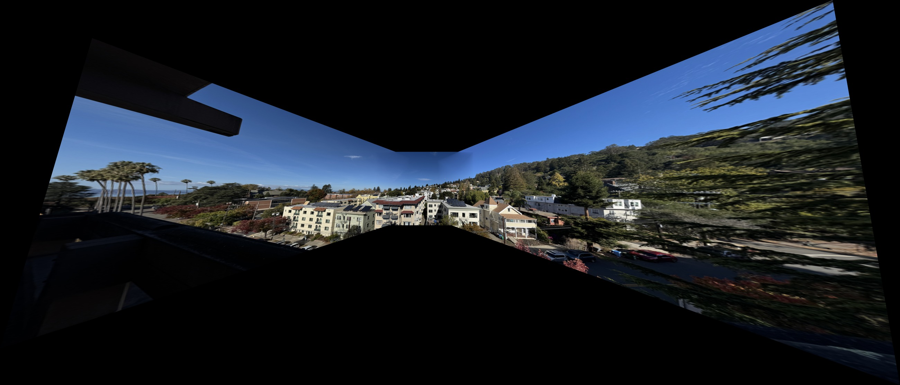
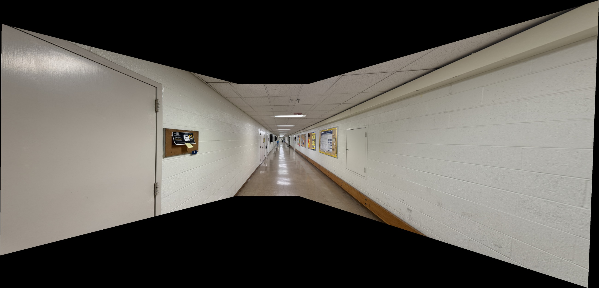
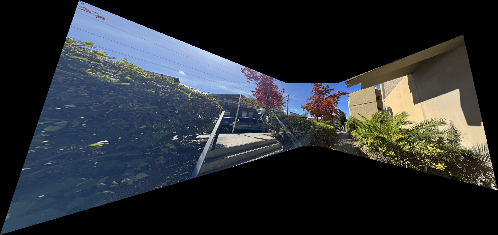